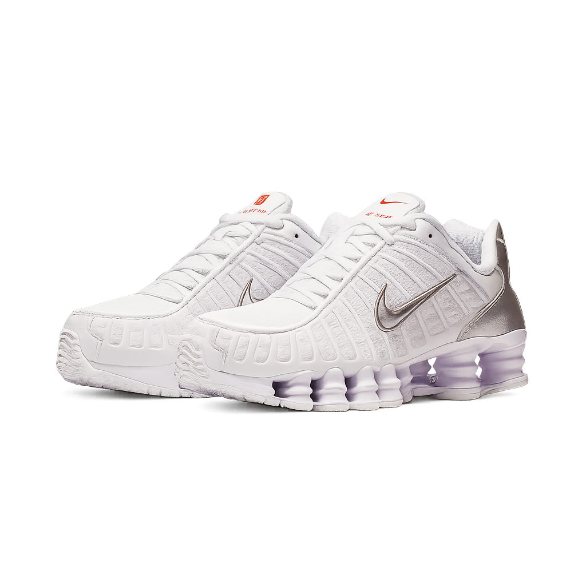
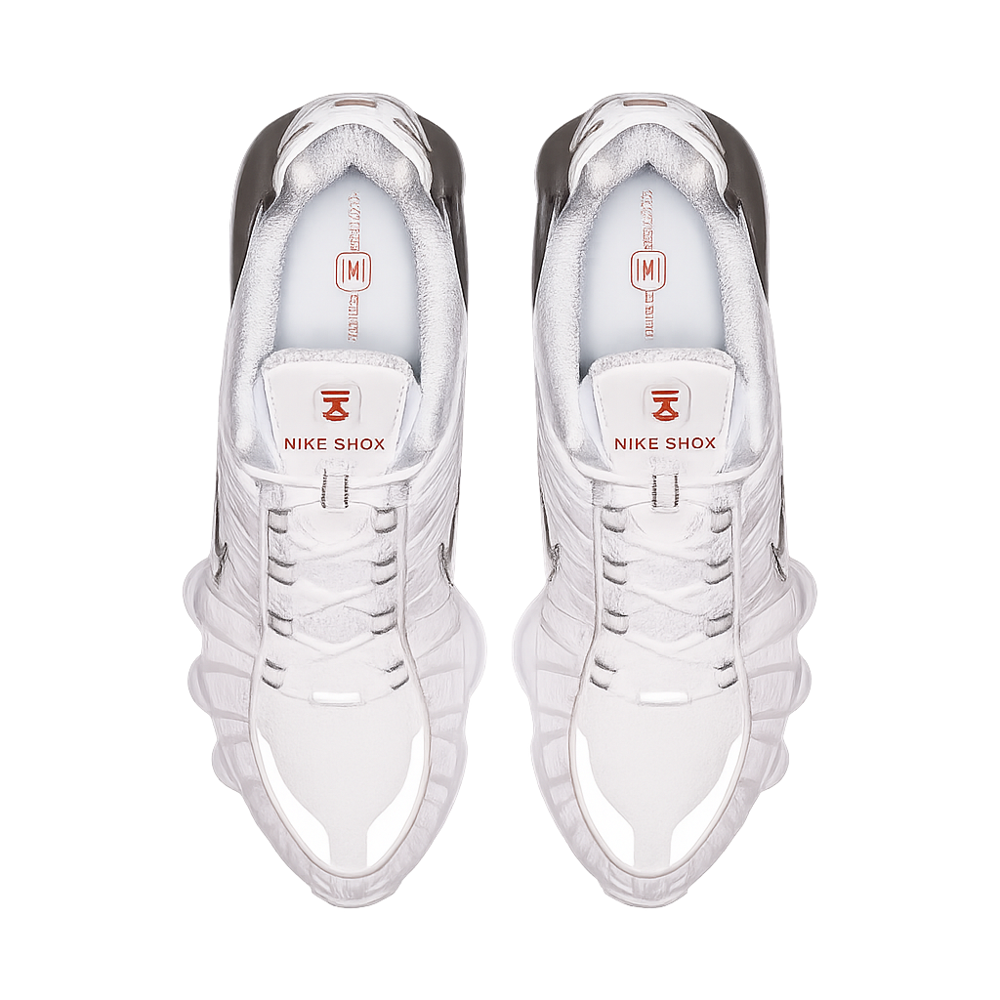

UM POUCO MAIS DE SUA HISTORIA
 O Nike Shox TL eleva o amortecimento mecânico a um novo patamar. Uma versão repaginada do ícone de 2003, ele apresenta mesh respirável no cabedal, com tecnologia Nike Shox em toda a extensão para absorção de impacto ideal e um visual ousado nas ruas.
TOP 10: Grandes nomes relacionados